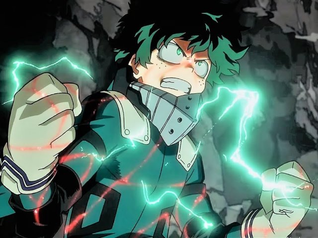

Midorya

zuku Midoriya (緑みどり谷や出いず久く Midoriya Izuku), também conhecido como Deku, é um estudante da U.A, sucessor de All Might e atual usuário do One For All. Ele também é o protagonista de My Hero Academia.
CEFET-MG CAMPUS XI
Informática 1 ano
Séries & Animes
Copyright © 2019 PH Inc. All rights reservd
Política de Privacidade | Termos de Uso | Brasil